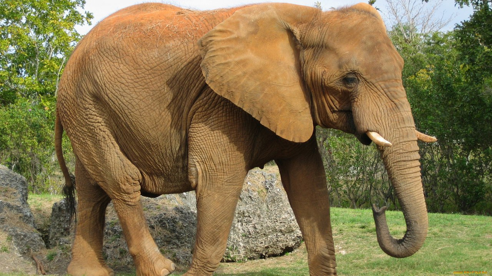

|  |
В
мире сохранилось лишь два вида слонов- африканский и его немного
меньший индийский собрат. Слоны- самые крупные и тяжелые обитатели
нашей планеты. Они же являются обладательями самых длинных зубов, самых
длинных носов и, пожалуй, самой крепкой памяти среди всех животных.
Слоны, которых часто называют "добродушными великанами", очень ранимы и
эмоциональны. Члены одного семейства всегда очень привязаны друг к
другу. |
Африканский слон (Loxodonta africana) |
Индийский
слон |
|
|
Величина |
Длина тела 6—7,7 м; хвоста —1—1,3 м; высота
туловища 2,2—3,7
м, реже до 4 м; масса самцов до 7,5 т |
Длина тела 5,5—6,6 м; длина хвоста 1,5—2,1
м; высота
туловища 2,4—2,9 м; масса до 4,7 т |
|
Признаки |
Голова с огромными ушами (очень большие и
толстые, лежат на
плечах) и длинным, подвижным хоботом (хобот в нижней половине гораздо
тоньше,
чем в верхней, на конце хобота вместо «пальца» находятся два широких
мясистых
нароста в виде подвижных лопастей, которые могут прижиматься друг к
другу и
закрывать отверстия хобота) ; спина позади зашейка довольно круто
поднимается к
середине тела, а потом круто опускается к хвосту; кожа серая с редким
волосяным
покровом; длинный хвост с пучком волос на конце; бивни у самцов и
самок; на
передних ногах имеется 5 копыт, на задних 4. |
Череп с 2 отчетливыми выпуклостями на лбу
над глазами; уши
меньше, чем у африканского слона (уши оттопырены и висят по бокам
головы);
хобот к концу утончается очень мало и имеет почти цилиндрическую форму;
спина
имеет равномерный изгиб. скудный
23:16:07
волосяной покров, с возрастом все больше светлых пятен; бивни лишь у
самцов; на
передних ногах имеется 5 копыт, на задних 3. |
|
Питание |
Листья, ветви и плоды деревьев и
кустарников, трава, корни;
ежедневно съедает до 150—250 кг корма |
Трава, во влажном тропическом лесу также
листья пальм и
других деревьев |
|
Размножение |
Беременность 22—24 месяца; 1 детеныш, очень
редко 2; вес при
рождении 90—135 кг, высота 90 см; слониха рождает 1 раз в 4 года |
Беременность 22 месяца; 1 детеныш, реже 2 и
совсем редко 3;
при рождении масса 60—115 кг |
|
Места
обитания |
От полупустынь, степей и лесистых саванн до
влажных
тропических и горных лесов (до 5000 м над уровнем моря); обширные
районы Африки
к югу от Сахары |
Саванны и леса; Индия и прилегающие районы |